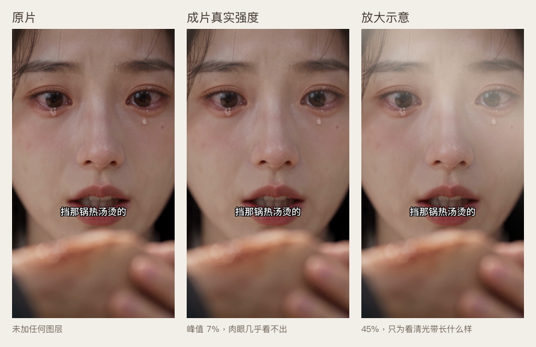
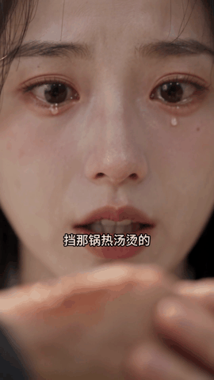
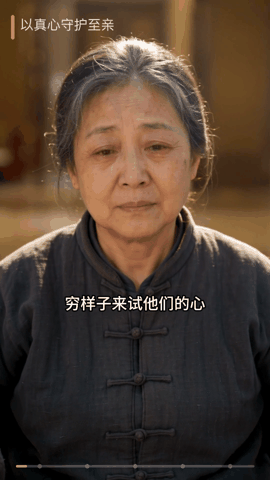
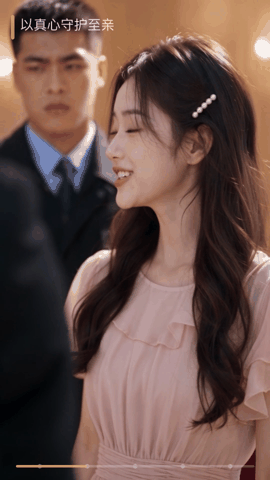
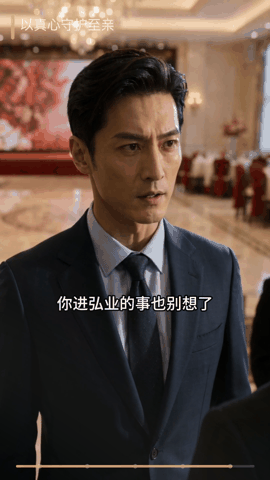
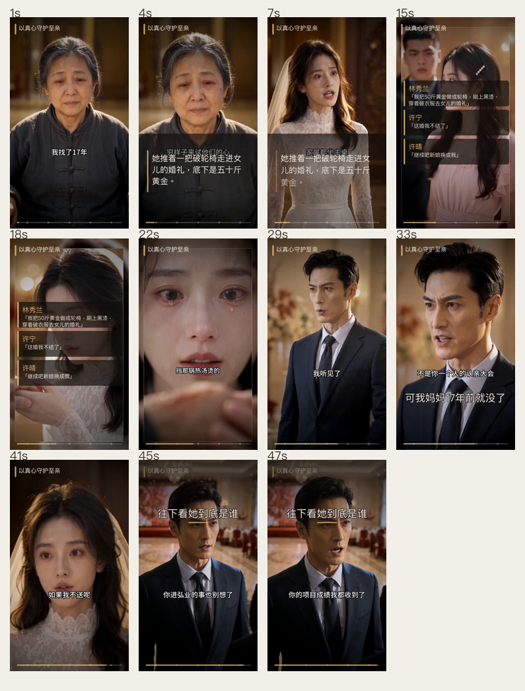

这一轮三件事：① 按张老师判断，把效果不好的「小的画中画」去掉； ② 从张老师给的外部方案里，只取「斜向扫光」这一条加上去； ③ 那份方案里其余手段全部存进备忘录，逐条标了能不能用，慢慢完善，这轮一概不采纳。 v2 已经认可的部分（大画中画、参数包、动态浮层、文字只给观众看）一律没动。
你上一版嫌「效果苛刻、看着重复」的，是这两个右下角小窗口。这轮全部删掉：
| 位置 | 原来是什么 | 现在 |
|---|---|---|
| 段 3（演示片 24–36 秒） | 右下角小窗放「另一个人」 | 取消，只留金句浮层 |
| 段 4（演示片 36–48 秒） | 右下角小窗放「脸部细节放大」 | 取消，只留收尾句 |
| 段 2（12–24 秒） | 主画面缩小 + 四周模糊背景（大画中画） | 保留：你上轮确认这个效果明显 |
你贴的那份方案 5.1 节叫「低强度动态特效」，写的是扫光／水波／粒子， 不透明度 3%~8%，「肉眼几乎不可见、系统可感知动态变化」。 我按这个口径做了一条斜着的柔光带，缓慢扫过全片。
| 项 | 取值 | 为什么 |
|---|---|---|
| 形态 | 倾斜 32°、边缘柔和、带轻微波动 | 不是死板直线；20° 在竖屏上看着偏「横」，看不出斜，已调到 32° |
| 强度 | 峰值 7% | 落在方案建议的 3%~8% 中间，暖白提亮、不做色块，几乎看不出 |
| 速度 | 6.5 秒扫过一次，按全片时间算 | 四段拼接处不跳变 |
| 挂在哪 | 所有图层的最底层 | 不挡角标、进度条、文字浮层、原剧字幕 |
| 怎么自动跑 | numpy 先算好一个周期的光带，逐帧取一张复用 | 不逐帧重算，全套渲完约 3 分钟 |





四张卡片动效里也带着扫光，只是 7% 强度下不刻意看看不出来。 真正叠进视频的是带半透明通道的 PNG 帧序列，不是 GIF 文件——GIF 只有 256 色， 半透明浮层叠上去会有色带和锯齿。

先说结论：这份方案有一大半跟我们对不上。 它写的是「影视解说」——有解说稿、有配音、可以把原声全删了重录； 我们做的是「零解说纯剪预告」，全靠原剧台词讲故事。 所以不是我们漏做了很多，是它面向另一种片型写的。
| 它主打的手段 | 判断 | 原因（大白话） |
|---|---|---|
| 删原音轨、换配音、解说稿改写 | 整块不适用 | 台词就是我们的内容，删了等于把片子删了 |
| 换 BGM、多轨混音、声道微调 | 不做 | 11-14 已定「音频不做」，配乐照老规矩人工加 |
| 改字幕字体、位置、时间轴错开 | 不适用 | 我们不去原字幕，硬字幕改不动，也没有独立字幕轨 |
| 水平镜像 | 不能用 | 字幕会被翻反；平台公告也把这类简单加工列进违规口径 |
| 局部变速 1.1~1.3 倍 | 不能用 | 会改段时长，撞时长账和台词节奏，正是会伤叙事的那类 |
| 改 MD5、换码率、25fps、清元数据 | 基础卫生 | 只改文件身份，画面结构没动；别拿它算去重成绩 |
| 放大裁切、镜头调序、掐头去尾 | 已在做 | 就是 A3 裁切、B5 跨集倒插、B4 切点错开 |
| 低强度动态特效 | 本次取 1 条 | 只加了斜向扫光 |
| 微旋转、水波／粒子、5% 纹理、1 像素动态横线 | 待议 | 能做，但观感或对素材的要求没验证，先放着慢慢来 |
备忘录全文：docs/去重手段_外部方案备忘录_v0.1.md。
v1、v2 目录与报告全部保留做前后对照；剪辑清单、方向卡、装配器、原 v3 成片、 两份去重方案文档一律未改。新增文件只有：本目录（v3）与那份备忘录。